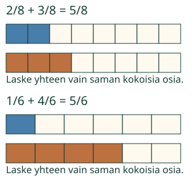

<link rel="stylesheet" href="lesson.css" />


<section data-teaching-step="1" data-lesson-role="teaching-step">
<section class="lesson-intro"><h2>Aava ja Loikka tekevät nauhaa</h2><p>Aavalla on kaksi kahdeksasosaa nauhaa. Loikalla on kolme kahdeksasosaa. Kokonaiset nauhat ovat yhtä pitkiä. Kootaan palat yhteen.</p><p><strong>Lasken saman kokoiset osat yhteen.</strong></p></section>
</section>


<section>
<section data-teaching-step="2" data-lesson-role="teaching-step">
<h2>Kokoa saman kokoiset osat</h2><p>Yksi kokonainen on yhden nauhan pituus. Kahdeksasosa on yksi kahdeksasta yhtä suuresta osasta. Siirrä kaksi palaa ja kolme palaa vierekkäin: saat viisi kahdeksasosaa.</p><p><strong>2/8 + 3/8 = 5/8.</strong> Palat eivät pienene siirrossa. Nimittäjä 8 kertoo osajaon, osoittaja 5 palojen määrän.</p><p>Toinen esimerkki: yksi kuudesosa ja neljä kuudesosaa on viisi kuudesosaa. <strong>1/6 + 4/6 = 5/6.</strong></p><figure data-lesson-role="worked-example"><figcaption>Kuvat käyttävät samaa kokonaisen mittaa. Väri ei yksin kerro laskua: seuraa myös palojen määrää ja merkintöjä.</figcaption></figure>
</section>

<section data-teaching-step="3" data-lesson-role="teaching-step">
<h3>Pysähdy hetkeksi</h3><p>Kun palat siirretään yhteen, pitääkö jokaista palaa leikata pienemmäksi? Näytä tai kerro ajatuksesi.</p><details data-lesson-role="answer"><summary>Miksi nimittäjä pysyy?</summary><p>Virhe-esimerkki: 2/8 + 3/8 ei ole 5/16. Kuudestoistaosa olisi pienempi pala. Tässä nauhoja ei leikata uudelleen.</p></details>
</section>
</section>


<section data-teaching-step="4" data-lesson-role="teaching-step" data-audience-spacing="compact">
<section><h2>Tutki ja kokeile</h2><p>Avaa tarvittaessa Tutki mallia ja katso yksi vaihe kerrallaan tai toista liike. Vaalea kehys näyttää saman kokonaisen mitan, eikä palaa venytetä. Harjoituksen tilanne valitaan erikseen.</p><div data-fraction-operation></div><noscript data-lesson-role="metadata"><p>Leikkaa samankokoiset paperinauhat yhtä suuriin osiin. Tee yllä olevat laskut siirtämällä paloja. Kuvat ja selitykset toimivat ilman animaatiota.</p></noscript><details data-lesson-role="hint"><summary>Apua vastaukseen</summary><p>Kirjoita osoittajaan kysyttyjen osien määrä ja nimittäjään osajako. Esimerkiksi kolme kahdeksasosaa kirjoitetaan 3 ja 8. Voit myös käyttää toista samanarvoista murtolukua. Nimittäjä ei voi olla nolla.</p></details></section>
</section>


<section data-teaching-step="5" data-lesson-role="teaching-step">
<h2>Uusi tilanne: nauharulla</h2><p>Kokonaisesta rullasta käytettiin ensin 2/8 ja sitten 1/8. Käytettiin 3/8. Jäljellä on 8/8 − 3/8 = 5/8. Tässä tarvitaan myös vähentämistä.</p>
</section>


<section data-teaching-step="6" data-lesson-role="teaching-step">
<details data-lesson-role="teaching-step"><summary>Lisätutkimus: sama tulos toisessa muodossa</summary><p>3/4 + 1/4 on 4/4 eli 1. Voit kirjoittaa tulokseksi myös 1/1. Puuttuvan osan tehtävässä kysytään lisättävää osaa, ei koko summaa.</p></details>
</section>


<details class="teacher" data-lesson-role="teacher-note"><summary>Opettajalle: tavoite, tuki ja rajat</summary><p>Vuosiluokat 3–6. Vaaditut esitiedot: M-FRAC-03 ja M-ADD-01. Lisäosatehtävä käyttää käänteistä ajattelua, rullasiirto myös M-FRAC-12:n vähentämistä. Eri kokoisten kokonaisten osia ei saa sekoittaa. Yhtä pitkä nauha edustaa aina yhtä kokonaista, ja mallissa osa pitää pinta-alansa myös liikkeessä.</p><p>Leikkaa paperi valmiiksi tai tee se aikuisen kanssa. Kokoa kaksi esimerkkiä käsin, siirrä tai peitä osia ja pyydä lasta osoittamaan, mikä säilyi. Numeroiden tunnistamista tai palojen nimeämistä ei tarkisteta erillisenä porttina. Aikuinen saa lukea ja auttaa.</p><p>Ensimmäinen vastausmalli näyttää saman laskun; nimittäjä on valmiina mutta muokattava. Nämä ovat tuettua harjoittelua, eivät itsenäistä näyttöä. Mallin ja tehtävän valinnat ovat erilliset. Vastauksen muutos poistaa sen vanhan palautteen, mallin tutkiminen ei. Kolmen laskun rivit saa järjestää uudelleen. Kaikki samanarvoiset murtolukuvastaukset hyväksytään.</p><p>Rajaus: samannimiset epänegatiiviset murtoluvut yhden kokonaisen sisällä. Erilaiset nimittäjät, sekalukulaskut ja negatiiviset erot tulevat myöhemmin. Tämä ruutuharjoitus ei todenna käsin leikkaamista, oppilaan perustelua, viivästettyä muistamista tai formaalia hallintaa. Ei pisteitä, henkilökohtaista tallennusta tai vapautusväitettä.</p></details>


<section data-teaching-step="7" data-lesson-role="teaching-step">
<section><h2>Lopuksi</h2><p>Miksi 2/8 + 3/8:ssa nimittäjä on yhä 8? Näytä paloilla, osoita tai kerro.</p></section>
</section>


